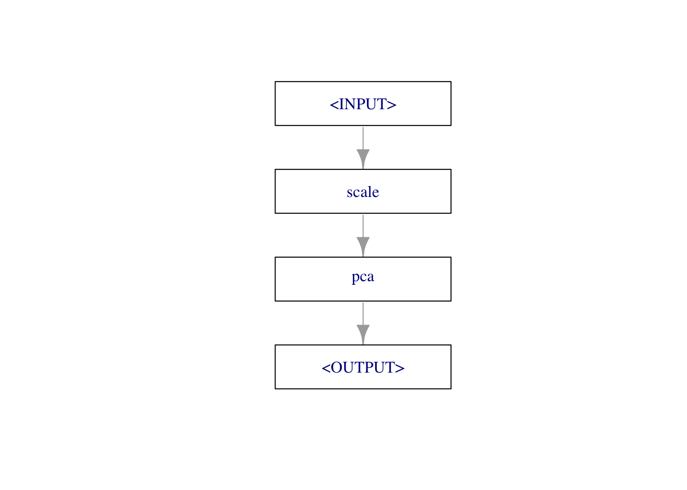
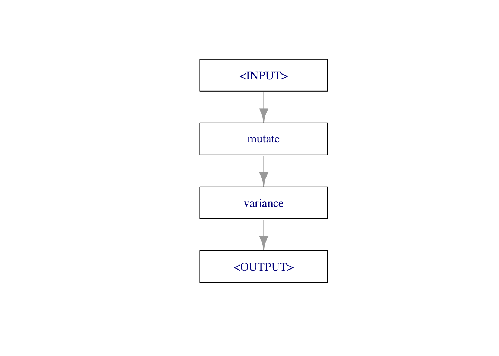

library(mlr3pipelines)
library(mlr3learners)
library(data.table)
as.data.table(mlr_pipeops)
Important
0. 인트로
전처리를 수행할 수도 있고, 태스크 일부분 선택, 러너 생성 후 예측, 앙상블 등
tidymodels의 recipe 와 비슷한 패키지
1.Block 만들기
pca = mlr_pipeops$get("pca")
pca = po("pca") # sugar function
pcaPipeOp: <pca> (not trained)
values: <list()>
Input channels <name [train type, predict type]>:
input [Task,Task]
Output channels <name [train type, predict type]>:
output [Task,Task]learner = po("learner", lrn("classif.rpart"))2. %>>%: pipe operator
%>>% 파이프 연산자를 이용해 파이프옵스(PipeOps) 객체 연결
gr = po("scale") %>>% po("pca")
gr$plot()
3. 노드, 엣지, 그래프
POs는 그래프로 결합될 수 있습니다.
mutate = po("mutate")
filter = po("filter",
filter = mlr3filters::flt("variance"),
param_vals = list(filter.frac = .5)
)
graph = Graph$new()$
add_pipeop(mutate)$
add_pipeop(filter)$
add_edge("mutate","variance")
graph$plot()
4. 모델링
그래프의 주 목적은 전처리와 모델링을 결합한 파이프라인을 만들어 이 과정을 한꺼번에 진행하는 것이라 할 수 있습니다.
mutate = po("mutate")
filter = po("filter",
filter = mlr3filters::flt("variance"),
param_vals = list(filter.frac = .5))
leaner = po("learner", lrn("classif.rpart"))
graph = mutate %>>%
filter %>>%
learner
task = tsk("iris")
graph$train(task)$classif.rpart.output
NULLgraph$predict(task)$classif.rpart.output
<PredictionClassif> for 150 observations:
row_ids truth response
1 setosa setosa
2 setosa setosa
3 setosa setosa
---
148 virginica virginica
149 virginica virginica
150 virginica virginica